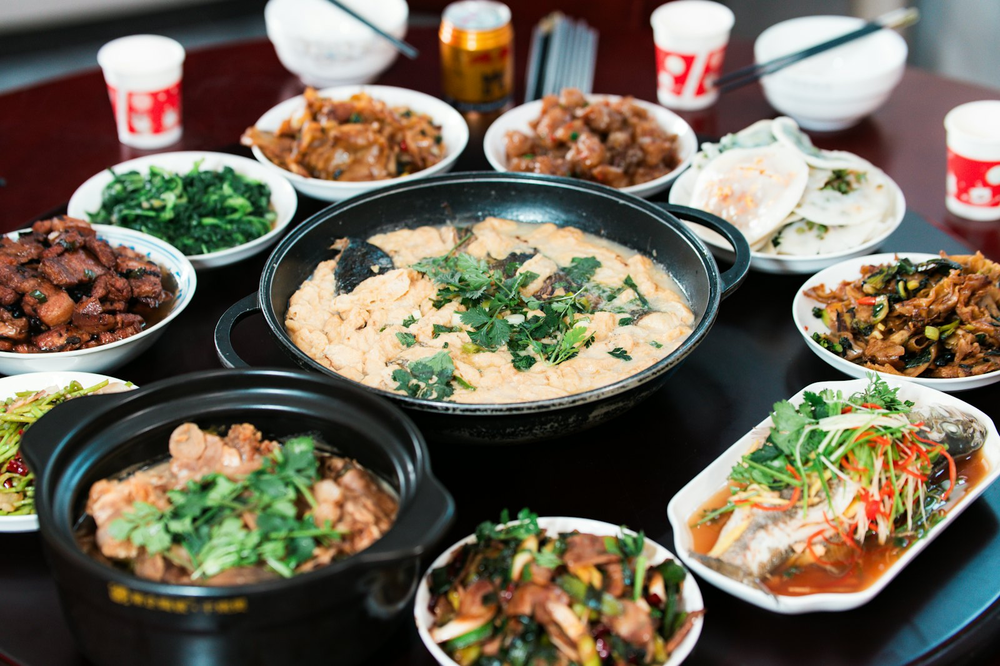

Maandmenu A
Genoeg voor 2 personen
- Mini loempia's
- Sate
- Babi pangang
- Foe yong hai vegetarisch
- Pikante kroepoek
- Witte rijst, nasi of bami naar keuze
€ 27,50 met mihoen of Chinese bami € 33,50

Grotestraat 2, Eibergen
Chinees specialiteiten tapas restaurant, afhaalservice en catering. Bel uw bestelling door met de nummers van onze kaart en haal hem warm op.
Dinsdag gesloten, de andere dagen vanaf 16.00 uur open (zondag vanaf 12.00 uur).
Kies uit bijna 150 gerechten, van soep en loempia tot Kantonese en Szechuanese specialiteiten. Noem bij het bellen het nummer van het gerecht.
Naar het menuLiever bij ons eten? Vraag een tafel aan, dan zoeken wij de beste plek voor u en uw gasten.
Tafel aanvragenComplete warme Chinese buffetten voor personeelsfeesten, recepties of een feest bij u thuis, vanaf 10 personen.
Cateringmenu'sAlle gerechten met hun vaste nummer. Zoek op naam of nummer, of kies een rubriek.
Geen gerecht gevonden. Probeer een ander woord of nummer, of bel ons: 0545 47 69 18.
Nasi of bami: dezelfde prijs.
Met witte rijst, nasi of bami € 19,00. Met mihoen of Chinese bami € 25,00.
Bij "Yuk of Kei" kiest u zelf: varkenshaas of kipfilet.
Bij "Yuk of Kei" kiest u zelf: varkenshaas of kipfilet.
Bij veel hoofdgerechten kiest u zelf: witte rijst, nasi, bami, mihoen of Chinese bami. De prijs staat er steeds bij.
Samengestelde menu's om te delen. Bel en noem het menu, dan staat het klaar.
Genoeg voor 2 personen
€ 27,50 met mihoen of Chinese bami € 33,50
Genoeg voor 2 personen
€ 28,95 met mihoen of Chinese bami € 34,95
Genoeg voor 2 personen
€ 31,95 met mihoen of Chinese bami € 37,95
Minimaal 2 personen, € 27,95 per persoon
€ 55,90 voor 2 personen met witte rijst, met nasi of bami € 57,90, met mihoen of Chinese bami € 61,90
Minimaal 2 personen, € 27,95 per persoon
€ 55,90 voor 2 personen met witte rijst, met nasi of bami € 57,90, met mihoen of Chinese bami € 61,90

Minimaal 2 personen. Met witte rijst; nasi of bami kost € 2 extra per 2 personen.
Kroepoek, pisang goreng, 2 soorten rundvlees, ananas, sate, atjar, babi pangang, foe yong hai, gado gado, ajam pangang met ketjapsaus en groenten.
Kroepoek, kleine loempia's (4 stuks), sate, babi pangang, gefileerde kip met szechuansaus, foe yong hai, ko loe yuk met zoetzure saus, groenten, daging smoor en daging kerrie.
Kroepoek, kleine loempia's (4 stuks), babi pangang, tjap tjoy met kipfilet, sate, gebakken Chinese garnalen, foe yong hai, po lo kei (gebakken kipfilet met verse ananas in zoetzure saus).

Wij verzorgen complete warme Chinese buffetten voor al uw personeelsfeesten, recepties of een feest bij u thuis. Informeer naar de mogelijkheden.
| Menu | Keuze uit | Per persoon |
|---|---|---|
| Catering menu Ao.a. mini loempia, babi pangang, gebakken kipfilet met ketjapsaus | 6 gerechten | € 16,50 |
| Catering menu Bo.a. sate, varkenshaas met Go Po saus, foe yong hai | 7 gerechten | € 20,00 |
| Catering menu Co.a. mini loempia, garnalen met kerriesaus, po lo kei | 8 gerechten | € 23,00 |
Vanaf 10 personen, prijs per persoon. Met witte rijst, nasi of bami.
| Maandag | 16.00 – 20.00 |
|---|---|
| Dinsdag | Gesloten |
| Woensdag | 16.00 – 20.00 |
| Donderdag | 16.00 – 20.00 |
| Vrijdag | 16.00 – 20.30 |
| Zaterdag | 16.00 – 20.30 |
| Zondag | 12.00 – 20.30 |
| Feestdagen | 12.00 – 20.30 |
Selecteer uw gegevens, dan gaan wij de beste tafel voor u vinden.